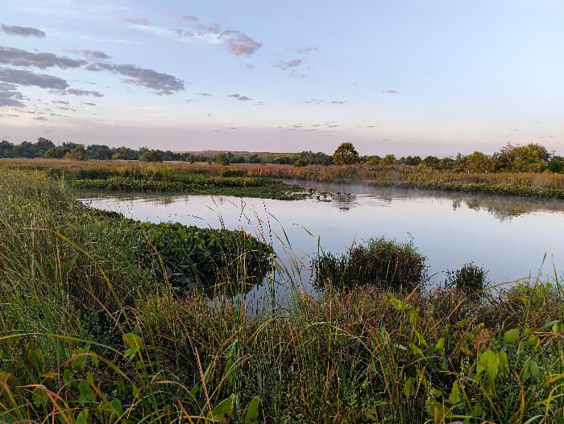

ACCC
expertise
about
species
team
contact
Protecting Our Urban Rivers
A collaborative effort dedicated to Atlantic Coast freshwater conservation.
This website is a work in progress.

Image: Christina River